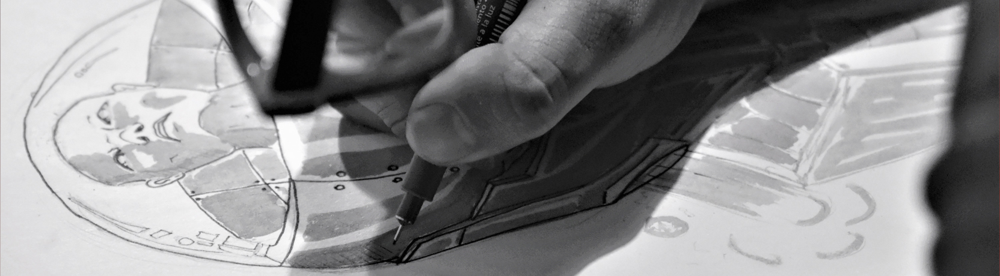

Nuestra forma de vivir es hasta cierto punto tan acelerado que nos deja una sensación de precipitación e inquietud que nos lleva a posicionar la atención hacia el exterior sin analizar unos instantes y mirar hacia dentro de nosotros. En dado caso ¿Qué nos revela la introspección? Según Carl Gustav Jung dice que “Quien mira hacia afuera, sueña; quien mira hacia dentro, despierta”. Esto nos refleja al término de introspección es objeto de muchas interrogantes y controversias en la filosofía y psicología. Platon se preguntó “¿Por qué no con calma y paciencia revisar nuestros propios pensamientos, y examinar a fondo y ver lo que estos aspectos en nosotros realmente son?” donde con lleva que la introspección es un proceso mental por el que la persona hace una autoobservación sobre sus procesos y conocerse en mayor medida. Sería, por lo tanto, la capacidad reflexiva que posee la mente para referirse o hacerse consciente de sus propios estados. INICIO .....
Al reflejarse entre los mismos te das cuenta de que tu cuerpo esta en el mismo sitio mientras tu mente y alma viajan fuera de lo que te aproxima a la realidad y te lleva a una catarsis sobre los desarrollos sensoriales dentro del comportamiento humano. INICIO .....
A lo largo de mi carrera pude desarrollarme como artista plástico, mediante el tiempo transcurria observe aun mas mis habilidades y una de ellas es la fotografía, en la cual me he desarrollado poco a poco optando muchos aspectos de ella. Y es ahí donde podemos observar nuestro entorno y analizar en que mundo estamos y como lo estamos caminando, ya que al sentarnos a meditar por un instante cada cosa que nos rodea sabremos y tendremos nuestras metas muy bien explícitas. INSTROSPECTIVA .....